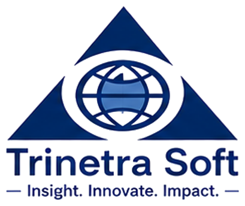

0:00 Secure360 Hub console walkthrough (security command, threat detection, governance, incident response, integrations) · 4:11 Agentic SOC live: PII guardrail, risk scoring, triage agent, Incident Commander approval gate, response agent with Graph verification, scoped SOC Copilot, tamper-evident audit, 1,000-incident benchmark.